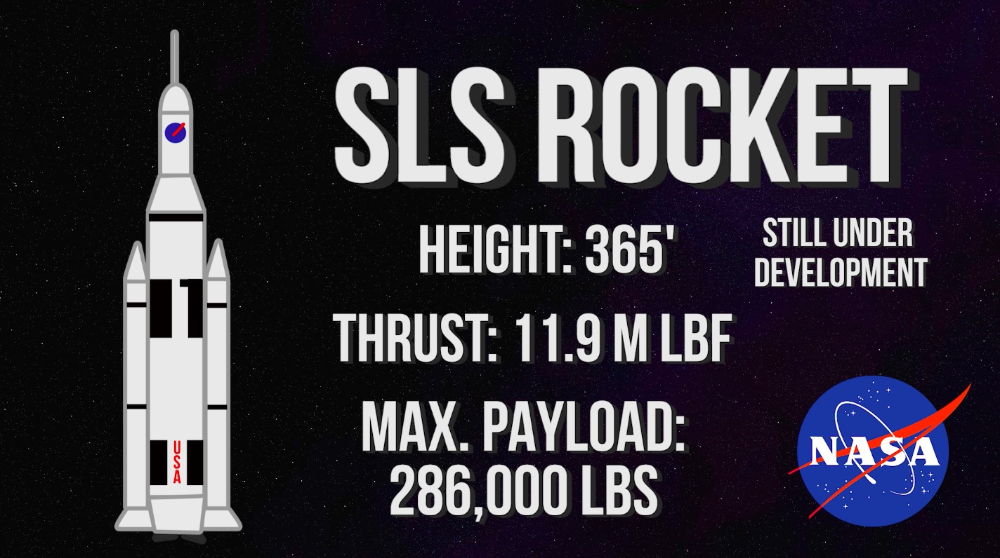

Space Launch System
The SLS isn’t currently operation, but it is estimated to be operational no earlier than late 2019. It will have a height of 365 feet and a liftoff thrust of up to 11.9 million pounds. Its maximum payload capacity will be 286,000 pounds into LEO. NASA is planning on using the system to get humans to Mars in the early 2030s.

NASA continues to push forward on their mission to get humans to Mars, but the private sector still has more to offer when it comes to world’s largest rockets. Enter, Blue Origin’s New Glenn Rocket.